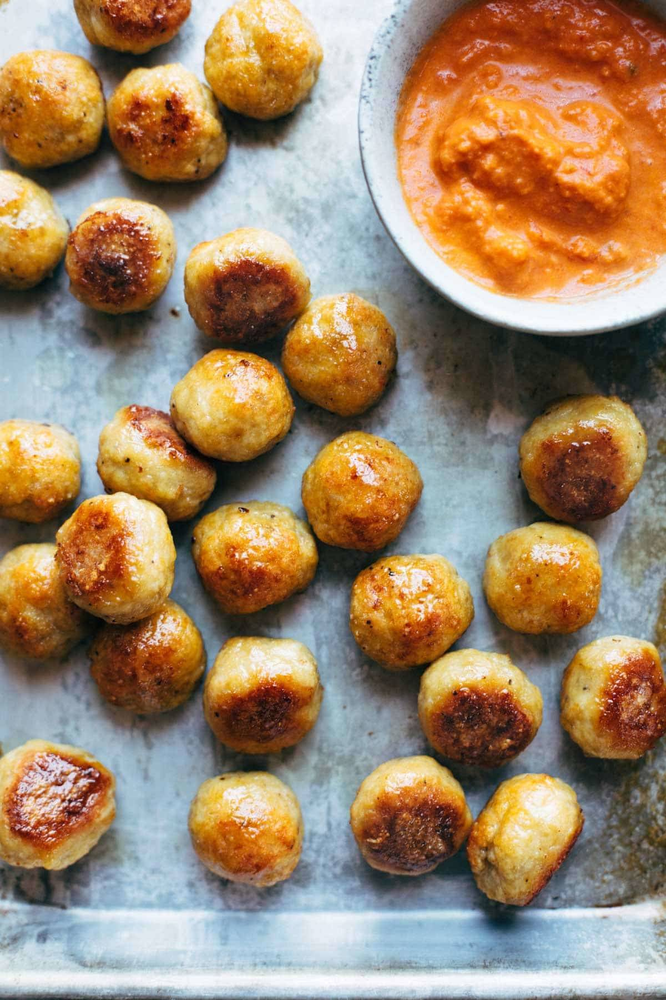

Home
Chicken Meatballs

These Baked Chicken Meatballs are the BEST! The perfect addition to any meal or to eat right on their own. Bonus: they’re meal-prep friendly to stock up throughout the week!
- 1 pound ground chicken or turkey
- 1 egg
- 1/2 cup panko breadcrumbs
- 1/2 cup grated Parmesan
- 2 tablespoons olive oil (optional – makes meatballs more moist and yummy)
- 1/2 teaspoon garlic powder
- 1/2 teaspoon onion powder
- 1/2 teaspoon salt
- black pepper to taste
- additional seasonings optional!
- Preheat the oven to 400 degrees. Line a baking sheet with foil and a little cooking spray.
- Mix all the ingredients together in a mixing bowl.
- Roll the mixture into about 30 small balls. Place on baking sheet.
- Bake for 25-30 minutes.